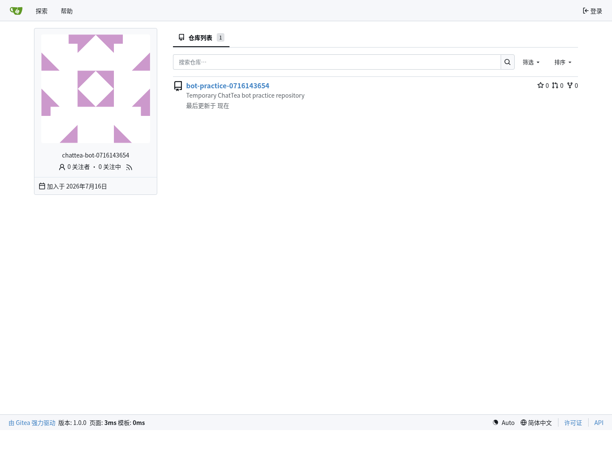
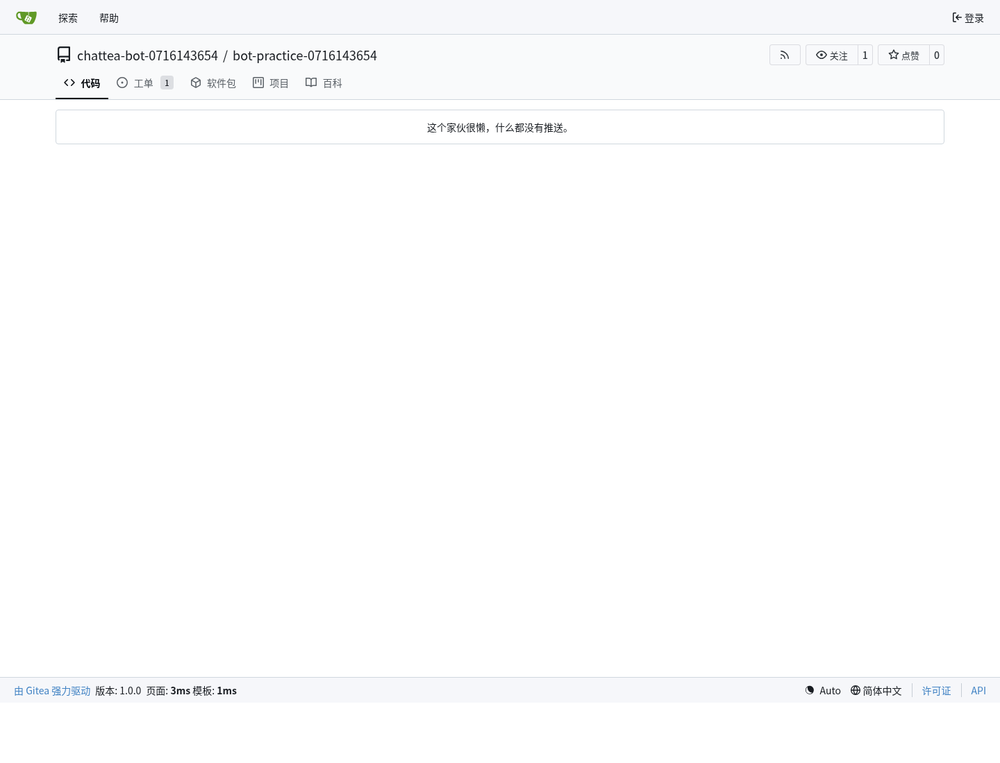
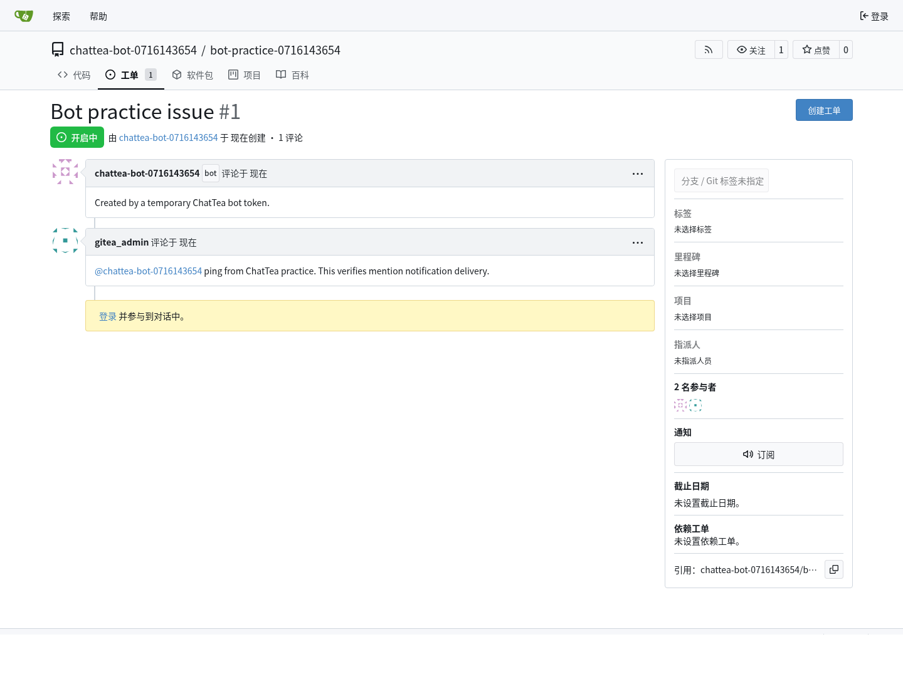

机器人账号与服务账号
本文记录 Gitea 机器人账号能力、典型用途、交互模式、唤醒机制，以及 ChatTea 第一版 bot CLI 的真实实践结果。这里的“机器人”不是 Actions runner，而是一个用于自动化调用 Gitea API、Git over HTTPS、CI/CD 或仓库维护任务的账号主体。
一句话结论
Gitea 已经有底层 bot 用户类型，本机 admin CLI 可以创建真正的 bot；但稳定 REST API 还没有完整暴露 bot 管理能力。所以 ChatTea 第一版先做 本机托管 Gitea 的 local backend，通过 gitea admin user create --user-type bot 创建 bot，再用 bot token 做真实 API 操作。
Bot 不是自动行为本身，而是自动行为使用的非人类账号身份。真正触发自动行为的是 Gitea Actions、webhook、notification polling、cron 或外部服务。
Bot 能做什么
Bot 本质上是一个非交互式账号身份。它能做什么取决于三层条件：
- 账号类型：Gitea 的
UserTypeBot不能像普通用户那样用密码登录 UI；它适合自动化，不适合人工交互。 - token scope：token 需要包含对应 API scope，例如
write:issue、write:repository、write:notification。 - 仓库 / 组织权限：即使 token scope 足够，也仍需要账号对目标仓库或组织有访问权限。
在这些条件满足时，bot 可以承担这些职责：
- 创建、读取、评论 issue / PR；
- 做 PR review、状态回写、自动标签、自动分派；
- 创建 release、上传或管理发布附件；
- 以固定身份执行仓库维护任务，例如同步、迁移、镜像、生成文档；
- 用 Git over HTTPS 进行自动化 push / fetch；
- 读取自己的通知流，响应别人
@bot的请求； - 作为外部 bot 服务调用 Gitea API 的身份。
Bot 不等于一个常驻进程。账号只是身份；真正“干活”的是外部进程、定时任务、webhook receiver、Actions job 或 ChatTea CLI。
Bot、User、Trigger、Executor 的区别
Bot 和普通 user 都是 Gitea 账号，也都需要仓库权限和 token scope。区别在于语义和用途：普通 user 代表一个人，bot 代表一个自动化主体。
| 概念 | 负责什么 | 例子 |
|---|---|---|
| Identity | 谁在 Gitea 里执行动作 | chattea-pages-bot、普通用户、系统账号 |
| Trigger | 什么事件启动自动化 | pull_request、push、issue_comment、@bot mention、cron |
| Executor | 谁真正运行逻辑 | Gitea runner、webhook receiver、notification polling daemon、CLI |
| Credential | executor 用什么身份调 API | bot token、user token、Actions secret |
| Permission | 这个身份能做什么 | repo collaborator、team 成员、token scope |
因此：
普通 user token 也能自动评论 PR，但审计上会显示是某个人做的。
Bot token 自动评论 PR，审计上会显示是自动化主体做的。
@bot 也不是魔法执行器。@bot 只是一个 trigger signal：Gitea 会生成 notification 或 webhook event，后续还需要 polling daemon、webhook receiver 或 workflow 去读取事件并执行动作。
实践案例：PR 触发 Actions 后由 bot 评论 preview
这是当前最典型的实践案例：PR 本身触发 Gitea Actions，Actions job 执行完以后用 bot 身份回写评论。
1. 创建自动化身份
管理员在本机托管 Gitea 上创建原生 bot 用户，并生成 scoped token：
gitea admin user create \
--username chattea-pages-bot \
--email chattea-pages-bot@example.invalid \
--user-type bot \
--fullname "ChatTea Pages Bot"
gitea admin user generate-access-token \
--username chattea-pages-bot \
--token-name chattea-pages-preview \
--scopes write:issue,read:repository \
--raw
这个步骤只定义身份和凭据，不定义自动行为。生成的 token 写入目标仓库或组织的 Actions secret，例如 CHATTEA_BOT_TOKEN。
2. 定义触发条件
自动行为由 workflow 定义，而不是由 bot 用户对象定义：
on:
pull_request:
branches:
- main
types:
- opened
- synchronize
- reopened
当用户打开或更新 PR 时，Gitea 创建 Actions run，匹配 runner 后执行 job。
3. 执行 preview job
Runner 在 job 中读取事件上下文，构建站点并发布 preview channel：
GITHUB_EVENT_PATH -> PR number -> dev/pr-<number> -> pages publish
这一步可以使用普通 runner 权限完成，不需要 bot 参与。
4. 用 bot 身份回写评论
comment step 从 secret 读取 bot token，然后调用 Gitea issue comment API：
POST /api/v1/repos/{owner}/{repo}/issues/{pr_number}/comments
Authorization: token ${CHATTEA_BOT_TOKEN}
API 调用成功后，PR timeline 中的评论作者就是 chattea-pages-bot。这对应 GitHub 里常见的 github-actions[bot] 体验：workflow 是 trigger + executor，bot 是写回评论时的身份。
完整链路可以理解为：
PR opened
-> Gitea pull_request event
-> .gitea/workflows/pages-preview.yml
-> runner executes preview job
-> publish dev/pr-N
-> call Gitea API with chattea-pages-bot token
-> PR comment appears as chattea-pages-bot
相关 Gitea 侧截图记录在 Pages 机制与静态站点发布 的“内网验收截图”部分，重点展示 workflow trigger、Actions run、job log 和 bot comment。
实践案例：用户 @bot 后触发自动机制
@bot 类场景和 PR preview 不一样。PR preview 的 trigger 是 pull_request；@bot 的 trigger 是 issue / PR / comment 文本里的 mention。
推荐两种实现方式：
| 模式 | 触发链路 | 适用场景 |
|---|---|---|
| Notification polling | @bot -> Gitea notification -> bot service 轮询 -> 执行动作 |
第一版验证、低复杂度、好调试 |
| Webhook receiver | issue_comment webhook -> parse @bot / slash command -> 执行动作 |
低延迟、ChatOps、跨仓库自动化 |
典型 notification polling 流程：
user comments: @chattea-bot rebuild preview
-> Gitea records mention notification for chattea-bot
-> bot service polls /api/v1/notifications
-> bot service reads issue / PR / comment detail
-> bot service parses command
-> bot service calls Gitea API as chattea-bot
-> result comment appears as chattea-bot
典型 webhook 流程：
user comments: @chattea-bot rebuild preview
-> Gitea sends issue_comment webhook
-> ChatTea webhook receiver validates event
-> receiver parses command and checks permissions
-> receiver calls Gitea API as chattea-bot
-> result comment appears as chattea-bot
这里的 bot 行为不是通过“创建 bot 用户”自动获得的。创建 bot 只提供 identity 和 token；具体行为由 workflow YAML、webhook 配置、bot service 代码或 CLI 命令定义。
Bot 行为定义在哪里
| 行为部分 | 定义位置 | 说明 |
|---|---|---|
| 创建 bot 身份 | chattea bot create 或 gitea admin user create --user-type bot |
只创建账号主体 |
| 生成 token | chattea bot token create 或 Gitea admin CLI |
决定 API credential |
| PR preview 自动评论 | .gitea/workflows/pages-preview.yml |
on: pull_request 定义 trigger，job 定义逻辑 |
@bot 命令响应 |
bot service / webhook receiver / polling daemon | 需要解析评论内容并执行动作 |
| 允许做哪些动作 | Gitea 仓库权限 + token scope | 权限不足时 API 会 403 |
| 审计显示谁做的 | API 使用的 token 所属账号 | 使用 bot token 就显示 bot |
第一版 ChatTea 可以先把这三类能力分开：
chattea bot ... # 管身份和 token
.gitea/workflows/*.yml # 管 PR/push/schedule 触发的自动化
chattea bot serve/poll # 后续管 @bot / slash command / webhook 自动化
主要用途
| 用途 | 说明 |
|---|---|
| Release bot | 创建 tag / release、补 changelog、上传发布附件 |
| Issue triage bot | 根据评论或标签自动分派、补标签、关闭重复问题 |
| PR assistant | 自动 review、跑检查后回写评论或状态 |
| Docs bot | 文档生成、截图更新、文档 PR 自动同步 |
| Mirror / sync bot | 在 Gitea 和外部 Git 服务之间同步仓库 |
| ChatOps bot | 监听 @bot 指令，然后调用 Gitea API 执行动作 |
| CI service account | 给外部 CI/CD 使用固定 Gitea 身份，而不是复用个人账号 |
交互模式
1. CLI 管理模式
管理员在本机托管 Gitea 上创建 bot 和 token：
chattea bot plan
chattea bot create \
--username release-bot \
--email release-bot@example.invalid \
--token-name release-bot \
--scope write:user,write:repository,write:issue,write:notification
chattea bot token create release-bot --token-name release-bot-next
这类命令负责账号和 token 生命周期，不负责长期运行 bot 逻辑。
2. 轮询通知模式
外部 bot 进程保存 bot token，定时调用：
GET /api/v1/notifications?status-types=unread
GET /api/v1/repos/{owner}/{repo}/notifications?status-types=unread
PATCH /api/v1/notifications/threads/{id}
当别人 @bot，Gitea 会把 mention 目标写入通知队列。bot 进程轮询到 unread thread 后，再读取 issue / PR / comment 详情并执行动作。
这是最简单、最容易调试的模式。缺点是延迟取决于轮询间隔。
3. Webhook 推送模式
仓库或组织配置 webhook，把 issues、issue_comment、pull_request、pull_request_review 等事件推到外部 bot 服务。外部服务解析 payload，如果正文里包含 @bot 或符合命令格式，就用 bot token 调 Gitea API。
这是真正接近“被唤醒”的模式：
Gitea issue_comment event -> webhook receiver -> parse @bot -> call Gitea API as bot
优点是实时；缺点是需要额外部署 webhook receiver，并处理签名校验、重试和幂等。
4. Actions / 定时任务模式
如果任务本身不需要 @bot 唤醒，可以用 Gitea Actions 或 cron 定期运行脚本。脚本使用 bot token 调 API，适合定期同步、报表、检查和维护。
@bot 的唤醒机制
Gitea 当前没有一个“bot 进程长连接事件流”。@bot 的可用唤醒机制主要有两种：
- 通知轮询：Gitea 解析 issue / PR / comment / review 里的 mention，把目标用户写入 UI notification。bot 服务用自己的 token 轮询
/notifications。 - Webhook 推送：仓库或组织 webhook 收到事件后，由外部 bot 服务自己判断 payload 里是否
@bot。
因此，如果只是“有人 @ 我的 bot，我怎么知道”，第一版最稳的答案是：
先用 /notifications 轮询打通；需要低延迟时，再加 webhook receiver。
实践中已验证：管理员在 issue comment 中 @临时bot 后，临时 bot token 轮询 /notifications 能看到 unread Issue thread。
官方状态
已有能力
Gitea 模型层有 bot 类型：
models/user/user.go：UserTypeBot // 4。models/user/user_system.go：Actions 使用gitea-actionsbot 系统账号。
Gitea admin CLI 当前包含这些 bot/service-account 能力：
gitea admin user create \
--username <bot-name> \
--email <bot-email> \
--user-type bot \
--restricted \
--access-token \
--access-token-name <token-name> \
--access-token-scopes <scopes>
对于已存在的 bot 或普通自动化用户，当前托管 Gitea binary 还支持单独生成 token：
gitea admin user generate-access-token \
--username <bot-name> \
--token-name <token-name> \
--scopes <scopes> \
--raw
REST API 缺口
官方 OpenAPI 当前暴露的 schema 仍是普通用户形态：
CreateUserOption有username、email、password、restricted、visibility等字段；没有user_type/is_bot。EditUserOption有prohibit_login、restricted等字段；没有 bot 类型转换字段。User响应没有type/is_bot字段。CreateAccessTokenOption支持name和scopes，但 token 路由需要 BasicAuth/reverse-proxy auth，不适合 passwordless bot 自助轮换。
官方 API 页面：
- https://docs.gitea.com/api/1.24/#operation/adminCreateUser
- https://docs.gitea.com/api/1.24/#operation/userCreateToken
- https://gitea.com/swagger.v1.json
上游讨论
官方仓库已有长期讨论和正在推进的 PR，说明 bot 账号仍是演进中的能力面：
feat: manage bot accounts from the admin UI, API and CLI：https://github.com/go-gitea/gitea/pull/38181[Proposal] Add "bot account" as a type of user：https://github.com/go-gitea/gitea/issues/13044Repository service account for Gitea Actions：https://github.com/go-gitea/gitea/issues/26754Organization and Repository level access token：https://github.com/go-gitea/gitea/issues/25900API token: add bot type：https://github.com/go-gitea/gitea/issues/32359
其中 PR #38181 计划补 admin UI、API、CLI 上的一等 bot 管理，包括 bot token 面板、individual/bot 转换、bot auth hardening。ChatTea 后续应跟踪这个 PR；一旦上游发布包含这些 API 的版本，再把 ChatTea 的 bot 命令从 local backend 扩展到 REST backend。
ChatTea 第一版 CLI
当前 PR 中已实现第一版 local backend：
chattea bot
├── plan # 检查本机 Gitea binary 是否支持 bot create / token generate / delete
├── create # 通过本机 admin CLI 创建 Gitea UserTypeBot，可同时生成 token
├── delete # 删除临时 bot；实践账号可配合 --purge 清理
└── token
└── create # 给已存在 bot 生成 scoped token
第一版只承诺本机托管 Gitea：
- 使用 ChatTea 解析出的
CHATTEA_BINARY、CHATTEA_CONFIG、CHATTEA_WORK_PATH。 - 调用
gitea admin user create --user-type bot，不传 password。 - 调用
gitea admin user generate-access-token --raw生成 token。 - 默认脱敏 token；只有显式
--show-token-once才输出原始 token。 - 远程 REST backend 暂不声称能创建真实 bot，只能规划为 restricted machine user。
真实实践记录
本轮在真实 Gitea 环境完成了一次临时 bot 实践，过程写入本地受限记录，公开文档只保留脱敏结论。
实践步骤：
chattea bot plan --json-output确认本机 Gitea binary 支持 bot create、token generate、user delete。chattea bot create创建临时 bot，并生成 scoped token。- 用 bot token 调
/user，确认返回主体就是临时 bot。 - 用 bot token 创建临时 public repo。
- 用 bot token 创建 issue。
- 用管理员 token 在 issue comment 里
@临时bot。 - 用 bot token 轮询
/notifications，收到 unreadIssuethread。 - 用 headless Chrome 截取网页端 bot 用户页、仓库页、issue mention 页。
chattea bot delete --purge --yes清理临时 bot 和仓库。
实践发现：
- 创建用户仓库时，当前 Gitea
/user/repos需要write:userscope；只给write:repository会返回 403。 - mention 通知需要 bot token 至少具备 notification 相关 scope；实践 token 使用
write:user,write:repository,write:issue,write:notification。 - 本轮为了验证 bot 自己创建仓库，临时 bot 使用
--unrestricted。受限 bot 更适合生产服务账号，但需要先通过团队、协作者或仓库权限授予访问范围。 @bot不会直接启动某个进程；它产生 Gitea notification。外部 bot 服务需要轮询 notifications 或接 webhook。
网页端截图：



下一步
- 增加
chattea bot notifications poll，封装/notifications轮询和 mark-read。 - 增加 webhook 规划或最小 receiver 示例，验证 push 模式的
@bot唤醒。 - 增加 restricted bot 的仓库授权实践：先通过团队 / collaborator 授权，再验证 issue / PR 操作。
- 等上游 PR #38181 或对应版本发布后，增加 REST backend 的 bot create/list/token 管理。